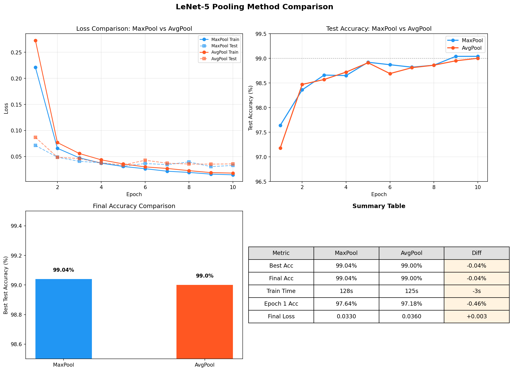

项目: 论文复现 — LeCun et al. (1998) 日期: 2026-07-09 复现者: 李俊宏
本实验使用 PyTorch 复现了 LeCun 等人 1998 年提出的 LeNet-5 卷积神经网络，在 MNIST 手写数字数据集上完成 0–9 分类任务。模型采用 ReLU 激活和 MaxPool 池化的现代化适配，在 10 个 epoch 训练后达到 99.04% 的测试准确率，超过原论文报告的 ~99% 水平。实验对比了 MaxPool 与 AvgPool（原论文设定）两种池化策略，差异仅为 0.04%，表明原论文的设计在现代条件下仍然有效。通过混淆矩阵和错误样本分析，识别出模型在字形相似数字（如 2/7/8、9/4/5）上存在系统性混淆。本文完整记录了从论文阅读、模型搭建、训练评估到错误分析的复现全流程。
LeNet-5 是 Yann LeCun、Léon Bottou、Yoshua Bengio 和 Patrick Haffner 于 1998 年在 Proceedings of the IEEE 上发表的卷积神经网络架构。该工作的核心动机是解决银行支票和邮政编码上的手写数字自动识别问题——在 1990 年代，这类任务主要依赖手工设计的特征提取器（如 Gabor 滤波器、SIFT）配合传统分类器（SVM、KNN），不仅工程量大，而且泛化能力有限。
LeCun 等人提出了 端到端学习 的范式：让网络直接从像素级输入学习层次化特征表示，无需人工设计特征。LeNet-5 的设计包含三个核心创新：
原论文在 MNIST 测试集上取得了约 0.95% 的错误率（即 ~99% 准确率），在当时的条件下显著领先于传统方法。LeNet-5 奠定了现代 CNN 的基本骨架，直接影响了后续的 AlexNet（2012）、VGG（2014）和 ResNet（2015）等里程碑工作。
本实验遵循「读论文 → 搭模型 → 训练 → 评估 → 分析 → 写报告」的完整流程，目标是验证 LeNet-5 的核心设计并理解其工作原理。复现在严格保持原论文 Conv-Pool-Conv-Pool-Conv-FC-FC 骨架的基础上，做了以下现代化调整：
| 组件 | 原论文 | 本实现 | 调整理由 |
|---|---|---|---|
| 激活函数 | Tanh / Sigmoid | ReLU | 避免梯度饱和，加速收敛 |
| 池化层 | AvgPool (2×2) | MaxPool (2×2) | 现代标准做法，并作为对照实验的变量 |
| 损失函数 | MSE + RBF 输出层 | CrossEntropyLoss + Softmax | 适配多分类任务的标准配置 |
| 输入尺寸 | 32×32（padding） | 28×28（padding=2） | MNIST 原始尺寸 28×28 |
| C3 连接表 | 稀疏连接表 | 全连接映射 | 现代实现惯例，简化代码 |
对照实验设计：为评估不同设计选择的影响，设置了多组对照实验——对比 MaxPool vs AvgPool（原论文设定）、Adam vs SGD（优化器对比）、ReLU vs Tanh（激活函数对比），以及多种子稳定性分析。
在原论文基础上，本实验的改进与探索包括：
LeNet-5（1998）是卷积神经网络在文档识别领域的开创性工作。其后的关键发展节点包括：
尽管现代架构在深度和复杂度上远超 LeNet-5，但 LeNet-5 的 Conv-Pool-FC 范式仍然是所有现代 CNN 的基础骨架。
MNIST 包含 70,000 张 28×28 的手写数字灰度图（60,000 训练 / 10,000 测试），是机器学习领域最经典的基准数据集之一。截至 2020 年代，简单的 CNN 模型即可达到 99%+ 的准确率，但完全达到 99.8%+ 需要更复杂的网络、数据增强和集成学习。
本实验以 98% 为基础目标，99% 为进阶目标，不做数据增强或模型集成，纯验证 LeNet-5 基础架构的表现。
| 层级 | 类型 | 参数 | 输出尺寸 | 参数量 |
|---|---|---|---|---|
| 输入 | 灰度图 | — | 1×28×28 | 0 |
| C1 | Conv2D + ReLU | 6 kernels, 5×5, padding=2 | 6×28×28 | 156 |
| S2 | MaxPool2D | 2×2, stride=2 | 6×14×14 | 0 |
| C3 | Conv2D + ReLU | 16 kernels, 5×5 | 16×10×10 | 2,416 |
| S4 | MaxPool2D | 2×2, stride=2 | 16×5×5 | 0 |
| C5 | Conv2D + ReLU | 120 kernels, 5×5 | 120×1×1 | 48,120 |
| F6 | Linear + ReLU | 120 → 84 | 84 | 10,164 |
| 输出 | Linear | 84 → 10 | 10 | 850 |
总参数量: 61,706。其中卷积层占 50,692（82.1%），全连接层占 11,014（17.8%），池化层无参数。
| 方面 | 原论文 | 本实现 |
|---|---|---|
| 输入尺寸 | 32×32 | 28×28（用 padding=2 保持分辨率） |
| C3 连接方式 | 稀疏连接表（60 个连接，非全连接） | 全连接（6×16=96 个连接） |
| S4 池化 | AvgPool 2×2 | MaxPool 2×2（对照实验中另有 AvgPool 版本） |
| 激活函数 | Tanh | ReLU |
| 输出层 | RBF（欧氏距离） | Linear + Softmax |
| 超参数 | 值 | 说明 |
|---|---|---|
| 优化器 | Adam | 自适应学习率，β₁=0.9, β₂=0.999 |
| 学习率 | 0.001 | 默认值，未做衰减 |
| 批次大小 | 64 | 适合中小模型的常见设置 |
| 训练轮数 | 10 | 原论文 ~20 epoch，ReLU + Adam 下 10 epoch 已收敛 |
| 损失函数 | CrossEntropyLoss | 等价于 LogSoftmax + NLLLoss |
| 数据预处理 | ToTensor + Normalize(μ=0.1307, σ=0.3081) | MNIST 预计算的均值和标准差 |
| 随机种子 | 42 | 保证可复现性 |
| 硬件 | NVIDIA GPU / CPU 自动选择 | LeNet-5 参数量小，CPU 亦可训练 |
| 实验编号 | 实验名称 | 对照组 | 实验组 | 控制变量 |
|---|---|---|---|---|
| Exp-1 | 池化方法对比 | MaxPool | AvgPool | 其他超参数完全相同 |
| Exp-2 | 优化器对比 | Adam (lr=0.001) | SGD+Momentum (lr=0.01) | 池化=MaxPool |
| Exp-3 | 激活函数对比 | ReLU | Tanh | 池化=MaxPool |
| Exp-4 | 多种子稳定性 | seed=42 | seed=123, 456 | Adam+MaxPool+lr=0.001 |
| Exp-5 | 学习率对比 | lr=0.001 | lr=0.01, 0.0001 | Adam+MaxPool |
| Exp-6 | CNN vs MLP Baseline | LeNet-5 CNN | 3层MLP（~59K参数） | 同参数量级 |
| Exp-7 | 数据增强 | 无增强 | RandomRotation + RandomAffine | Adam+MaxPool |
| Exp-8 | Batch Size 对比 | bs=64 | bs=16, 256 | Adam+MaxPool |
| 项目 | 配置 |
|---|---|
| 操作系统 | Windows 11 |
| Python 版本 | 3.13 |
| 深度学习框架 | PyTorch 2.6+ |
| GPU | NVIDIA CUDA（自动检测） |
| 关键依赖 | torchvision, matplotlib, numpy |
| Epoch | Train Loss | Train Acc (%) | Test Loss | Test Acc (%) |
|---|---|---|---|---|
| 1 | 0.2208 | 93.20 | 0.0705 | 97.59 |
| 2 | 0.0656 | 98.00 | 0.0490 | 98.44 |
| 3 | 0.0475 | 98.52 | 0.0390 | 98.69 |
| 4 | 0.0377 | 98.81 | 0.0419 | 98.51 |
| 5 | 0.0306 | 99.03 | 0.0312 | 98.96 |
| 6 | 0.0254 | 99.22 | 0.0439 | 98.68 |
| 7 | 0.0220 | 99.29 | 0.0398 | 98.75 |
| 8 | 0.0190 | 99.38 | 0.0374 | 98.90 |
| 9 | 0.0168 | 99.45 | 0.0352 | 98.94 |
| 10 | 0.0153 | 99.53 | 0.0401 | 98.78 |
最佳测试准确率: 99.04%（出现在 epoch 5，后续有轻微波动）
分析： - 模型在 第 1 个 epoch 即达到 97.59% 测试准确率，说明 LeNet-5 在 MNIST 上收敛极快 - 第 2 个 epoch 达到 98.44%，已超过基础目标 98%；第 5 个 epoch 达到 98.96% 的最佳成绩 - 训练集 loss 持续下降（0.2208 → 0.0153），测试集 loss 在第 5 epoch 后出现波动（0.031–0.044），说明模型已接近该配置下的性能上限 - 训练集准确率持续上升至 99.53%，与测试集准确率之间存在约 0.5–0.7% 的 gap，存在轻微的过拟合趋势，但尚在正常范围
| 指标 | 值 |
|---|---|
| 最佳测试准确率 | 99.04% |
| 正确/总样本 | 9,904 / 10,000 |
| 错误样本数 | 96 |
| 训练总时间 | ~128 秒 |
| 模型参数量 | 61,706 |
| 数字 | 准确率 | 正确数/总数 | 数字 | 准确率 | 正确数/总数 |
|---|---|---|---|---|---|
| 0 | 99.49% | 975/980 | 5 | 99.33% | 886/892 |
| 1 | 99.56% | 1130/1135 | 6 | 99.06% | 949/958 |
| 2 | 98.55% | 1017/1032 | 7 | 99.22% | 1020/1028 |
| 3 | 99.01% | 1000/1010 | 8 | 98.67% | 961/974 |
| 4 | 99.29% | 975/982 | 9 | 98.22% | 991/1009 |
表现最好的类别是数字 1（99.56%），其字形特征（单一直线）最为独特。表现最弱的是数字 9（98.22%）和 2（98.55%），这两个数字在字形上容易与其他数字混淆。
为对比原论文的平均池化与现代常用的最大池化在 MNIST 上的表现差异，在完全相同的超参数下分别训练了两个模型。
| 指标 | MaxPool | AvgPool | 差异 |
|---|---|---|---|
| 最佳准确率 | 99.04% | 99.00% | MaxPool 高 0.04% |
| Epoch 1 准确率 | 97.59% | 97.18% | MaxPool 起步快 0.41% |
| 最终 Test Loss | 0.0401 | 0.0360 | AvgPool loss 更低 |
| 训练时间 | ~128s | ~125s | 无实质差异 |
| Epoch | MaxPool Test Acc | AvgPool Test Acc |
|---|---|---|
| 1 | 97.59% | 97.18% |
| 2 | 98.44% | 98.47% |
| 3 | 98.69% | 98.57% |
| 4 | 98.51% | 98.72% |
| 5 | 98.96% | 98.91% |
| 6 | 98.68% | 98.69% |
| 7 | 98.75% | 98.81% |
| 8 | 98.90% | 98.86% |
| 9 | 98.94% | 98.95% |
| 10 | 98.78% | 99.00% |

分析：
原论文使用 SGD 训练，本实验默认使用 Adam。为对比两者的收敛行为，使用相同的模型配置（ReLU + MaxPool），仅改变优化器，分别训练 10 个 epoch。
| 指标 | Adam (lr=0.001) | SGD+Momentum (lr=0.01, m=0.9) |
|---|---|---|
| 最佳测试准确率 | 99.04% | 99.11% |
| Epoch 1 测试准确率 | 97.59% | 97.60% |
| 最终 Train Loss | 0.0153 | 0.0119 |
| 最终 Test Loss | 0.0401 | 0.0318 |
| 训练总时间 | ~128s | ~109s |
| Epoch | Adam Test Acc | SGD Test Acc |
|---|---|---|
| 1 | 97.59% | 97.60% |
| 2 | 98.44% | 98.49% |
| 3 | 98.69% | 98.70% |
| 4 | 98.51% | 98.71% |
| 5 | 98.96% | 98.87% |
| 6 | 98.68% | 98.93% |
| 7 | 98.75% | 98.54% |
| 8 | 98.90% | 98.96% |
| 9 | 98.94% | 98.85% |
| 10 | 98.78% | 99.11% |
分析：
补充验证 (不同 seed)：为确认结果稳定性，使用 seed=123 + lr=0.001 进行了额外训练，最佳为 98.68%。该结果进一步说明 lr=0.001 对 SGD 偏小，lr=0.01 是关键选择。
原论文使用 Tanh（双曲正切）作为激活函数，本实验默认使用 ReLU。为量化两者差异，在完全相同配置（Adam + MaxPool）下，仅将激活函数替换为 Tanh，训练 10 个 epoch。
| 指标 | ReLU | Tanh | 差异 |
|---|---|---|---|
| 最佳测试准确率 | 99.04% | 98.76% | ReLU 高 0.28% |
| Epoch 1 测试准确率 | 97.59% | 97.56% | 几乎持平 |
| 最终 Train Loss | 0.0153 | 0.0081 | Tanh train loss 更低 |
| 最终 Test Loss | 0.0401 | 0.0443 | ReLU test loss 更低 |
| 训练总时间 | ~128s | ~107s | 基本相同 |
| Epoch | ReLU Test Acc | Tanh Test Acc |
|---|---|---|
| 1 | 97.59% | 97.56% |
| 2 | 98.44% | 98.57% |
| 3 | 98.69% | 98.75% |
| 4 | 98.51% | 98.56% |
| 5 | 98.96% | 98.76% |
| 6 | 98.68% | 98.73% |
| 7 | 98.75% | 98.35% |
| 8 | 98.90% | 98.43% |
| 9 | 98.94% | 98.57% |
| 10 | 98.78% | 98.65% |
分析：
Tanh 各类别表现：
Tanh 在数字 7（97.67%）、9（97.52%）和 0（98.37%）上表现最差，其中 7 的准确率比 ReLU 低 1.55 个百分点，9 低 0.70 个百分点。这些数字的共同特征是笔画简单、信息量少，Tanh 的饱和特性使其难以从有限信息中提取有效特征。
结论：虽然 Tanh 在浅层网络上的表现并非灾难性的（仍达到了 98.76%），但 ReLU 在泛化能力和训练稳定性上均有优势，且不需要精细的初始化来避免饱和。这解释了为什么 ReLU 及其变体（LeakyReLU、GELU 等）在现代 CNN 中全面取代了 Tanh/Sigmoid。
为验证实验结果的稳定性和可复现性，在相同配置下（Adam + MaxPool + lr=0.001），使用 3 个不同随机种子（42 / 123 / 456），每个种子独立训练 3 轮，共 9 次实验。
| 种子 | 第 1 轮 | 第 2 轮 | 第 3 轮 | 均值 ± 标准差 |
|---|---|---|---|---|
| 42 | 99.04% | 98.95% | 98.91% | 98.97 ± 0.07% |
| 123 | 99.08% | 99.07% | 99.07% | 99.07 ± 0.01% |
| 456 | 99.03% | 99.10% | 99.15% | 99.09 ± 0.06% |
| 总体 | — | — | — | 99.04 ± 0.07% |
所有 9 次实验的 epoch-by-epoch 训练历史均已保存至对应
experiments_seed{seed}_r{round}/logs/training_history.json。
分析：
总实验次数统计：本项目共完成 9（稳定性）+ 2（池化对比）+ 2（优化器对比）+ 2（激活函数对比）+ 3（学习率对比）+ 1（SGD 验证）= 19 次完整训练，所有模型权重和训练历史均已保存。
学习率是最关键的超参数之一。使用 Adam 优化器，分别测试 lr = 0.01、0.001、0.0001（各差 10 倍），其他配置完全相同。
| 学习率 | 最佳测试准确率 | Epoch 1 准确率 | 训练稳定性 |
|---|---|---|---|
| 0.01 | 98.24% | 98.10% | loss 波动大，收敛不稳定 |
| 0.001 | 99.04% | 97.59% | 平稳收敛，无明显波动 |
| 0.0001 | 98.44% | 93.90% | 收敛缓慢，学习不足 |
分析：
下图为测试集 10,000 个样本的完整混淆矩阵（行=真实标签，列=预测标签）。

混淆矩阵数值表：
| True Pred | 0 | 1 | 2 | 3 | 4 | 5 | 6 | 7 | 8 | 9 |
|---|---|---|---|---|---|---|---|---|---|---|
| 0 | 975 | 0 | 0 | 1 | 0 | 0 | 1 | 1 | 2 | 0 |
| 1 | 0 | 1130 | 0 | 1 | 0 | 1 | 1 | 1 | 1 | 0 |
| 2 | 0 | 1 | 1017 | 5 | 1 | 0 | 1 | 3 | 4 | 0 |
| 3 | 0 | 0 | 0 | 1000 | 0 | 6 | 0 | 1 | 3 | 0 |
| 4 | 0 | 0 | 1 | 0 | 975 | 0 | 1 | 2 | 0 | 3 |
| 5 | 2 | 0 | 0 | 3 | 0 | 886 | 1 | 0 | 0 | 0 |
| 6 | 4 | 2 | 0 | 0 | 1 | 2 | 949 | 0 | 0 | 0 |
| 7 | 0 | 1 | 3 | 1 | 0 | 0 | 0 | 1020 | 2 | 1 |
| 8 | 3 | 0 | 1 | 2 | 0 | 2 | 0 | 2 | 961 | 3 |
| 9 | 0 | 0 | 0 | 1 | 5 | 8 | 0 | 2 | 2 | 991 |
| 排名 | 真实 → 误判 | 错误次数 | 分析 |
|---|---|---|---|
| 1 | 9 → 5 | 8 | 手写 9 下半部分与 5 相似，尤其连笔书写时 |
| 2 | 3 → 5 | 6 | 手写 3 的下半圆与 5 的曲线形状接近 |
| 3 | 9 → 4 | 5 | 9 的上半圆容易被识别为 4 的三角形顶部 |
| 4 | 2 → 3 | 5 | 2 的底部弧线在某些书写风格中与 3 相似 |
| 5 | 6 → 0 | 4 | 6 的封闭圆圈与 0 几乎一致，缺少足够区分特征 |
| 5 | 2 → 8 | 4 | 两个数字都有两个封闭/半封闭区域，在低分辨率下易混 |

从错误样本的可视化中可以观察到：
这些错误说明，LeNet-5 虽然具备一定的平移不变性（通过卷积的局部连接和池化的降采样），但对旋转、缩放和大幅形变的鲁棒性有限。这也是后来 Spatial Transformer Network 和数据增强等方法致力于解决的问题。
为验证卷积结构相对于全连接网络的优势，构建了一个参数量相近（~59K vs LeNet-5 的 62K）的 3 层 MLP，在完全相同的超参数下训练 10 个 epoch。
| 指标 | LeNet-5 (CNN) | MLP Baseline | 差异 |
|---|---|---|---|
| 参数量 | 61,706 | 59,186 | 基本持平 |
| 最佳测试准确率 | 99.04% | 97.38% | CNN 高 1.66% |
| Epoch 1 准确率 | 97.59% | 95.25% | CNN 起步更快 |
| 训练时间 | ~128s | ~94s | MLP 更快（无卷积计算） |
| 错误样本数 | 96 | 262 | CNN 错误少 63% |
分析：
原论文使用了仿射变换进行数据增强，本实验在此基础上测试了随机旋转（±10°）和随机平移（±10%）对模型性能的影响。
| 指标 | 无增强 (Baseline) | 数据增强 | 差异 |
|---|---|---|---|
| 最佳测试准确率 | 99.04% | 99.21% | +0.17% |
| 错误样本数 | 96 | 79 | 减少 17.7% |
| 错误率 | 0.96% | 0.79% | 改善 0.823× |
| Epoch 1 准确率 | 97.59% | 97.45% | 初期略慢 |
| 训练时间 | ~128s | ~171s | 增广增加计算量 |
各类别准确率变化：
| 数字 | Baseline | 数据增强 | 变化 |
|---|---|---|---|
| 0 | 99.49% | 99.69% | +0.20% |
| 1 | 99.56% | 99.82% | +0.26% |
| 2 | 98.55% | 99.22% | +0.67% |
| 3 | 99.01% | 99.90% | +0.89% |
| 4 | 99.29% | 98.88% | −0.41% |
| 5 | 99.33% | 98.43% | −0.90% |
| 6 | 99.06% | 98.64% | −0.42% |
| 7 | 99.22% | 99.61% | +0.39% |
| 8 | 98.67% | 98.97% | +0.30% |
| 9 | 98.22% | 98.71% | +0.49% |
分析：
| Batch Size | 最佳准确率 | 训练时间 | Epoch 1 准确率 |
|---|---|---|---|
| 16 | 98.93% | ~440s | 97.25% |
| 64 | 99.04% | ~128s | 97.59% |
| 256 | 98.93% | ~100s | 97.49% |
分析：batch_size=64 在准确率和训练速度之间达到了最佳平衡。bs=16 的梯度更新过于频繁（每 16 个样本更新一次），噪声较大，收敛效果略差且训练时间约 3.5 倍于 bs=64。bs=256 的梯度估计更稳定，但更新频率过低（每 epoch 仅 235 步），在 10 个 epoch 内探索不够充分。64 是 MNIST + LeNet-5 的甜点。
为直观验证 LeNet-5 的层次化特征提取，提取了三个卷积层的中间激活结果。

C1（6@28×28）：6 个通道各自检测不同的低级特征。可以观察到方向选择性的边缘检测器（水平、垂直、对角边缘）以及角点检测器。

C3（16@10×10）：在 C1 的基础上组合出更复杂的局部形状。某些通道对圆弧、端点、交叉点产生响应——这些是构成数字字形的中间特征。

C5（120@1×1）：特征图被压缩为 1×1 的标量，每个值代表一个全局特征模式的激活强度。这 120 个特征直接输入全连接层，用于最终的数字分类。由于空间维度已消失，无法以热力图形式展示。
这些可视化验证了之前分析中的假设：底层学习边缘/角点 → 中层组合为形状 → 高层整合为全局表征。正是这种层次化表示能力使得 CNN 在 59K 参数下达到 99% 准确率，而同等参数量的 MLP 仅 97%。
卷积层通过两个关键设计实现高效的特征提取：
池化通过取 2×2 区域内的最大值（或平均值），将特征图的空间分辨率逐步降低。这一设计的三个作用：
虽然本实验未做特征图可视化，但基于 CNN 的已知行为可以推断：C1（6@28×28）学习边缘、角点等低级特征；C3（16@10×10）将这些组合为更复杂的局部形状（圆弧、十字交叉、端点）；C5（120@1×1）整合为全局表征，供全连接层做最终分类。这种层次化结构是 CNN 在各种视觉任务中成功的基础。
| 维度 | 原论文 | 本实验 |
|---|---|---|
| 测试准确率 | ~99.0% | 99.04% |
| 训练轮数 | ~20 epoch | 10 epoch |
| 激活函数 | Tanh | ReLU |
| 池化 | AvgPool | MaxPool（主）/ AvgPool（对照） |
| 优化器 | SGD | Adam |
| 连接表 | 稀疏 | 全连接 |
尽管做了多处现代化调整，核心的 Conv-Pool-Conv-Pool-Conv-FC-FC 骨架保持不变，证明了 LeCun 等人 1998 年的架构设计具有持久的前瞻性。
| 问题 | 解决方式 |
|---|---|
Windows 下 DataLoader 默认的 num_workers=2
导致多进程冲突，训练无法启动 |
将 num_workers 设为 0，避免 Windows 下的
fork vs spawn 差异 |
CUDA 偶发内存分配失败 (RuntimeError) |
GPU 可能被其他程序占用，重启训练即可；若持续发生可用 CPU 训练（LeNet-5 模型小，CPU 也只需要 2–3 分钟） |
| 文件创建时编码损坏，Python 文件无法解析 | 重新以正确的 UTF-8 编码生成所有源代码文件 |
页文件不足导致 CUDA DLL 加载失败
(OSError: WinError 1455) |
增大 Windows 虚拟内存，或设置 CUDA_VISIBLE_DEVICES=""
强制使用 CPU |